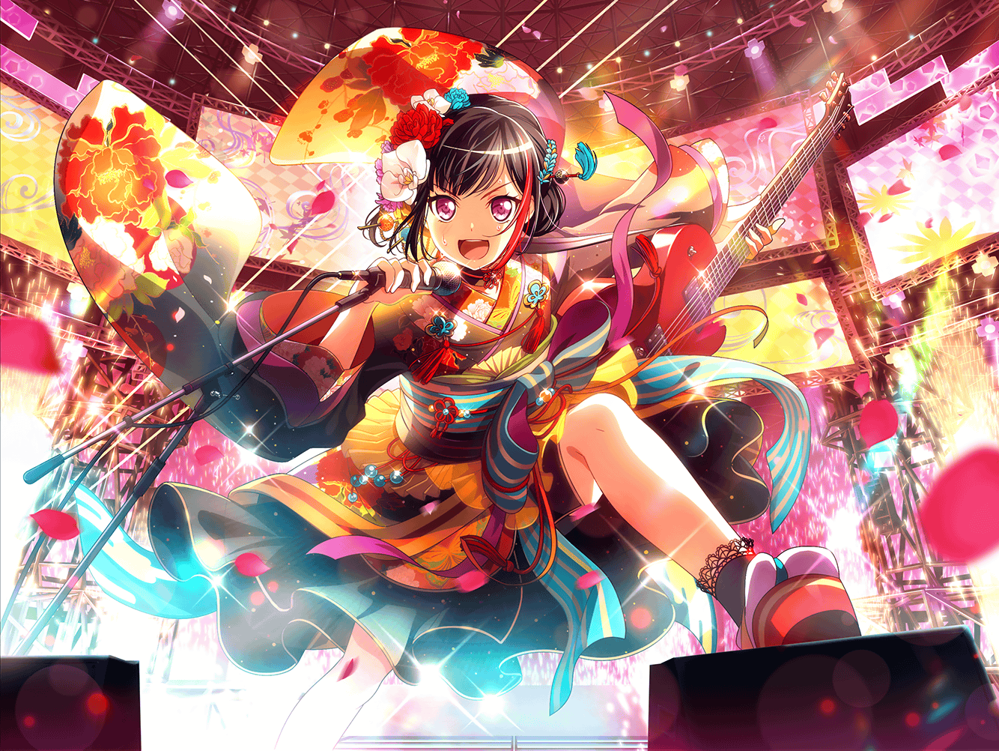

CiRCLE ロビー
まりな
あ！ 蘭ちゃん！ お疲れ様
蘭
あ……まりなさん。
それに{{userName}}さん。どうも……って、
なんで二人してちょっと笑ってるんですか
まりな
あ、あはは……ごめんごめん。
最近、ライブ前に不思議な掛け声が聞こえるから、
どうしたのかな？ ってちょうど話してたところなんだ
蘭
あれ、外まで聞こえてたんですか……？
{{userName}}さんも聞いたことある？
蘭
はあ……マジか……
蘭
声の正体は巴。『大声を出すと気合が入って、緊張が飛ぶし
いい演奏ができるんだよな』とか言って、
最近急にやり始めたんだよね
まりな
そうなんだ？ 巴ちゃん、商店街でお祭りの太鼓も叩いてるって
聞いたことあるから、その流れなのかな？
蘭
多分、そうです。巴は緊張がとけるって言ってるけど、
あたしからしたら、いつ『アレ』がくるかって
気が気じゃないっていうか……
蘭
逆に、『アレ』のせいで緊張するんですよね。
巴はあの掛け声を『いつも通り』にしたいって言ってますけど、
賛成してる人、誰もいなくて
まりな
ふふっ、巴ちゃん、めげないね？
蘭
まりなさんと{{userName}}さんからも、
巴に言ってください。やめてほしい、って
蘭
バンド内のことには口出せない……って、
そういうこと言う？ {{userName}}さん、ずるいよ
まりな
あははっ。ところで、あの掛け声……何て言ってるの？
蘭
えっと……『ソイソイソイソイソイヤ』……みたいな？
普通のテンションで言うとなんかヤバイですね、これ。
こ、この話恥ずかしいからやめません？
まりな
そう？ うーん、それじゃあ……あ、そうだ！
Afterglowのことで気になってる事がもう１つあるの！
蘭
気になること？ なんですか？
まりな
この前、ライブに来てた中年の男性に声をかけられたの。
『蘭がいつもお世話になってます』って。
あれって、蘭ちゃんのお父さんなのかな？
蘭
……げ。父さん、まりなさんにも声かけてたんですか？
じゃあ、もしかして{{userName}}さんにも……？
蘭
{{userName}}さんも挨拶されてる？
しかも、毎回？ ……はあ。ホント、やめてほしい
蘭
なんか、すいません……。うちの父、ホントにおせっかいで。
何かヘンなこと言ったりしてませんでしたか？
まりな
ヘンな事なんて何もないよ！
むしろ、この間なんて私達スタッフにも差し入れをくれてね。
だから、お父さんによろしく伝えておいてほしいくらいだよ！
蘭
差し入れまで！？
……はあ〜……そのうち、CiRCLEで飾ってください、なんて
フラワーアレンジメントでも持ってきそうですね
まりな
ふふ、それはそれで大歓迎だよ
蘭
ホント、余計なことばっかりして……
とりあえず、まりなさん達の事は伝えておきます
蘭
それと、恥ずかしいからこれ以上余計なことはするなって
釘もさしておかなきゃ……はあ